多层感知机¶
约 3831 个字 14 张图片 预计阅读时间 13 分钟
Reference¶
- https://www.cse.iitm.ac.in/~miteshk/CS7015/Slides/Handout/Lecture2.pdf
1 生物神经元¶
深度学习神经网络的最基本单元被称为人工神经元. 为什么它被称为神经元呢？其灵感来自哪里？灵感来源于生物学（更具体地说，来自大脑）. 生物神经元也叫神经细胞或神经处理单元. 我们先来看看生物神经元的样子.
树突（dendrite）：接收来自其他神经元的信号；突触（synapse）：与其他神经元的连接点；胞体（soma）：处理信息；轴突（axon）：传输该神经元的输出.
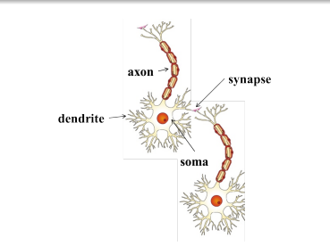
让我们看一个非常卡通化的神经元工作示意图. 我们的感觉器官与外界相互作用，它们将信息传递给神经元. 神经元可能会被激活并产生反应（在这个例子中是笑声）.
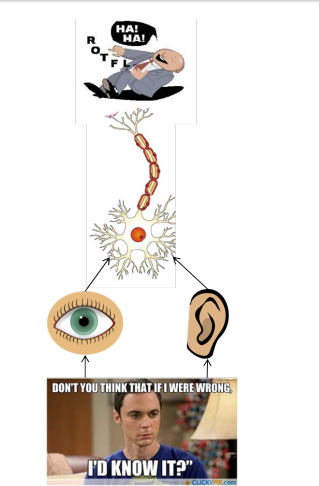
当然，在现实中，并非单个神经元完成所有这些工作. 存在一个大规模并行互联的神经元网络. 感觉器官将信息传递给最底层的神经元. 其中一些神经元可能会因这些信息而被激活（以红色显示），并依次将信息传递给与之相连的其他神经元. 这些神经元也可能被激活（同样以红色显示），这个过程持续进行，最终产生反应（在这个例子中是笑声）.
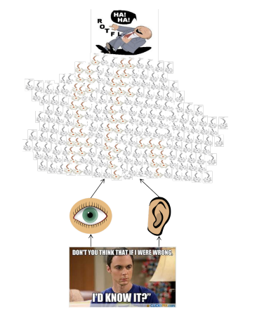
普通人脑大约有 \(10^{11}\)（1000亿）个神经元！这个大规模并行网络也确保了分工协作. 每个神经元可能执行特定的功能或对特定的刺激做出反应.
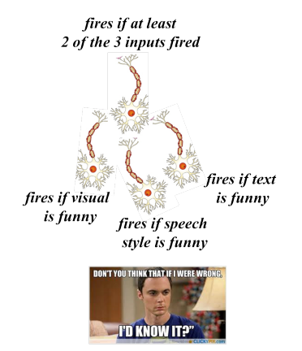
大脑中的神经元是分层排列的. 我们以处理视觉信息的视觉皮层（大脑的一部分）为例来说明这一点. 从视网膜开始，信息被传递到多个层次（沿着箭头方向）. 我们观察到，V1、V2到AIT这些层次形成了一个层级结构（从识别简单的视觉形状到高级物体）.
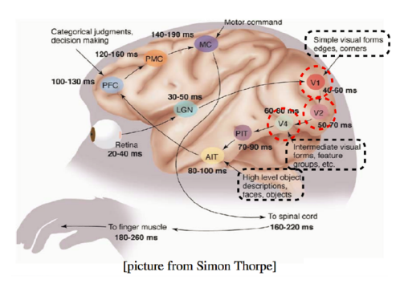
2 麦卡洛克 - 皮茨神经元¶
麦卡洛克（神经科学家）和皮茨（逻辑学家）在1943年提出了一种高度简化的神经元计算模型.
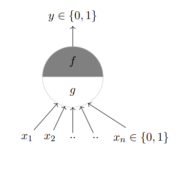
\(g\) 函数对输入进行聚合，函数 \(f\) 根据这种聚合做出决策. 输入可以是兴奋性的或抑制性的. 如果任何一个 \(x_i\) 是抑制性的，则 \(y = 0\) ，否则：
\(\theta\) 被称为阈值参数，这被称为阈值逻辑.
让我们使用这个麦卡洛克 - 皮茨（MP）神经元来实现一些布尔函数.
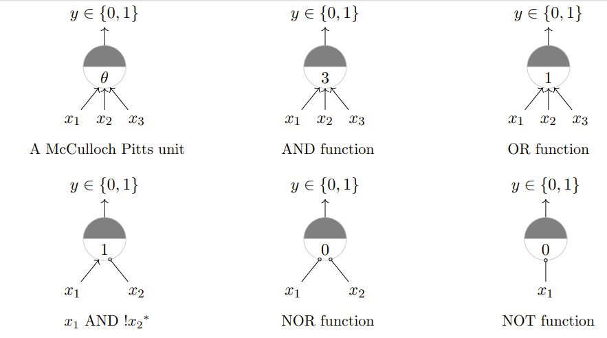
是否任何布尔函数都可以用一个麦卡洛克 - 皮茨单元来表示呢？在回答这个问题之前，让我们先看看MP单元的几何解释.
对于一个或函数，一个单一的MP神经元将输入点分成两半：位于直线 \(\sum_{i = 1}^{n}x_i - \theta = 0\) 上或上方的点，以及位于该直线下方的点. 换句话说，所有产生输出0的输入将位于直线的一侧（\(\sum_{i = 1}^{n}x_i < \theta\) ），所有产生输出1的输入将位于直线的另一侧（\(\sum_{i = 1}^{n}x_i \geq \theta\) ）.
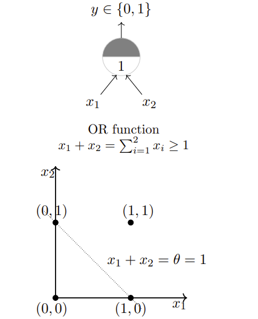
对于AND函数和Tautology函数，一个单一的MP神经元也是会将输入点分成两半：
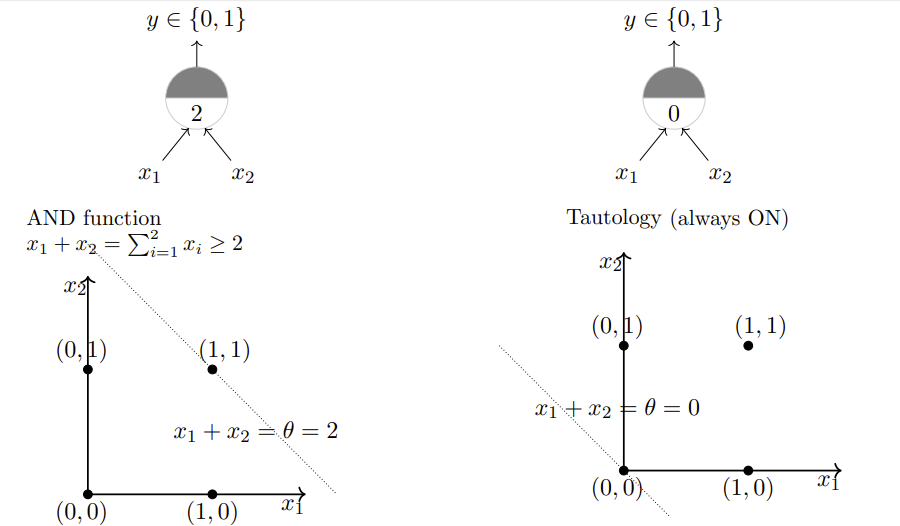
如果我们有超过2个输入会怎样呢？那么，我们面对的将不是一条线，而是一个平面. 对于或函数，我们希望有一个平面，使得点(0, 0, 0)位于一侧，其余7个点位于平面的另一侧.
目前的结论是：一个单一的麦卡洛克 - 皮茨神经元可用于表示线性可分的布尔函数. 线性可分（对于布尔函数）：存在一条线（平面），使得所有产生1的输入位于线（平面）的一侧，所有产生0的输入位于线（平面）的另一侧.
3 感知机¶
接下来的问题是：对于非布尔（比如实数）输入呢？我们总是需要手动编码阈值吗？所有输入都同等重要吗？如果我们想给某些输入赋予更大的权重（重要性）呢？对于非线性可分的函数又该怎么办呢？
美国心理学家弗兰克·罗森布拉特在1958年提出了经典的感知机模型. 这是一个比麦卡洛克 - 皮茨神经元更通用的计算模型. 主要区别在于：为输入引入了数值权重，并提供了学习这些权重的机制. 输入不再局限于布尔值. 明斯基和佩珀特在1969年对其进行了改进和深入分析，这里我们所说的感知机模型指的就是他们改进后的模型.
感知机模型被广泛接受的一种表示形式为：
其中，\(x_0 = 1\)且\(w_0 = -\theta\)，\(w_0\) 称为偏置项（bias），如果没有偏置项，感知机的决策边界将始终通过原点，这会极大限制模型的表示能力. 有了偏置，决策边界就可以是任意的超平面，能够适应更多复杂的分类情况.
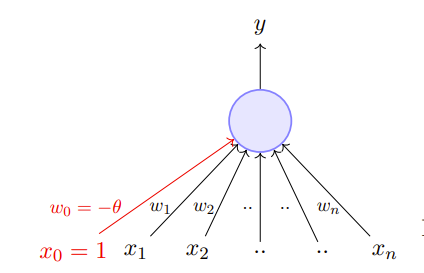
也可写为：
进一步改写为：
单个感知机只能用于实现线性可分的函数，与感知机的区别是：感知机的权重（包括阈值）可以学习，并且输入可以是实数值.
4 误差和误差曲面¶
让我们固定阈值（\(-w_0 = 1\) ），尝试不同的\(w_1\) 、\(w_2\)值. 比如，\(w_1 = -1\) ，\(w_2 = -1\) . 这条线有什么问题呢？ 让我们尝试更多的\(w_1\) 、\(w_2\)值，并记录我们产生的错误分类数量.
| \(w_1\) | \(w_2\) | 错误分类数量 |
|---|---|---|
| -1 | -1 | 1 |
| 1.5 | 0 | 1 |
| 0.45 | 0.45 | 3 |
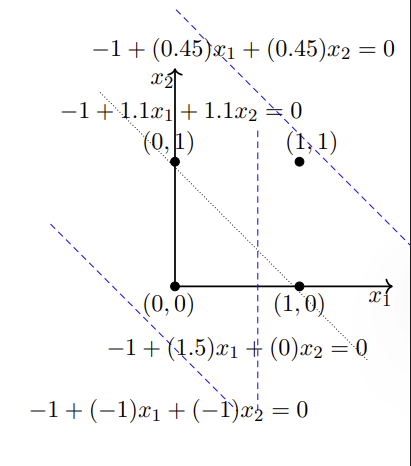
我们希望找到一种算法，能够找到使这种错误分类数量最小化的\(w_1\) 、\(w_2\)值.
5 感知机学习算法¶
我们现在将介绍一种更具原理性的学习这些权重和阈值的方法，但在此之前，让我们先回答这个问题……除了实现布尔函数（这看起来不是很有趣），感知机还能用于什么呢？我们感兴趣的是将感知机用作二元分类器. 让我们看看这是什么意思……
让我们重新考虑决定是否观看一部电影的问题. 假设我们得到了一份电影列表，并且每个电影都有一个标签（类别），表明用户是否喜欢这部电影，这是一个二元决策. 进一步假设我们用 \(n\) 个特征（有些是布尔值，有些是实数值）来表示每部电影. 我们假设数据是线性可分的，并且希望感知机学习如何做出这个决策. 换句话说，我们希望感知机找到这个分离平面的方程（或者找到\(w_0, w_1, w_2, \ldots, w_n\)的值）.
算法1：感知机学习算法
- \(P\)：标记为1的输入；
- \(N\)：标记为0的输入；
- 随机初始化\(w\)；
- 当未收敛时：
- 从\(P \cup N\)中随机选择一个\(x\)；
- 如果\(x \in P\)且\(\sum_{i = 0}^{n}w_i * x_i < 0\) ，则\(w = w + x\)；
- 如果\(x \in N\)且\(\sum_{i = 0}^{n}w_i * x_i \geq 0\) ，则\(w = w - x\)；
- （当所有输入都被正确分类时，算法收敛）
为什么这个算法有效呢？为了理解其原理，我们需要涉及一些线性代数和几何知识.
考虑两个向量 \(w\) 和 \(x\)：
因此，我们可以将感知机规则重写为：
我们感兴趣的是找到将输入空间分成两半的直线 \(w^T x = 0\) . 这条直线上的每个点\((x)\)都满足方程 \(w^T x = 0\) . 你能说出\(w\)与这条直线上的任何点\((x)\) 之间的夹角\((\alpha)\)是多少吗？这个夹角是 \(90^{\circ}\)（因为\(\cos \alpha=\frac{w^T x}{\|w\|\|x\|}=0\) ）. 由于向量\(w\)垂直于直线上的每个点，所以它实际上垂直于这条直线本身.
考虑位于这条直线正半空间的一些点（向量）（即 \(w^T x \geq 0\) ）. 任何这样的向量与 \(w\) 之间的夹角会是多少呢？显然，小于 \(90^{\circ}\). 那么位于这条直线负半空间的点（向量）（即\(w^T x < 0\) ）呢？任何这样的向量与\(w\)之间的夹角会是多少呢？显然，大于90°. 当然，这也可以从公式 \(\cos \alpha=\frac{w^T x}{\|w\|\|x\|}\)推导出来.
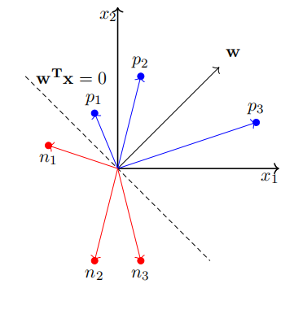
牢记这个概念，让我们重新审视这个算法.
对于\(x \in P\) ，如果\(w \cdot x < 0\) ，这意味着这个\(x\)与当前\(w\)之间的夹角\((\alpha)\)大于90°（但我们希望\(\alpha\)小于90° ）. 当\(w_{new} = w + x\)时，新的夹角\((\alpha_{new})\)会怎样呢？
因此，\(\alpha_{new}\)将小于\(\alpha\) ，这正是我们想要的.
对于\(x \in N\) ，如果\(w \cdot x \geq 0\) ，这意味着这个\(x\)与当前\(w\)之间的夹角\((\alpha)\)小于90°（但我们希望\(\alpha\)大于90° ）. 当\(w_{new} = w - x\)时，新的夹角\((\alpha_{new})\)会怎样呢？
因此，\(\alpha_{new}\)将大于\(\alpha\) ，这正是我们想要的.
6 收敛性证明¶
既然我们对算法为何生效有了一些理解和直观认识，现在我们将给出一个更正式的收敛性证明.
定义1：在 \(n\) 维空间中，两个点集 \(P\) 和 \(N\) 被称为绝对线性可分，当存在 \(n + 1\) 个实数 \(w_0, w_1, \ldots, w_n\)，使得对于每个点 \((x_1, x_2, \ldots, x_n) \in P\) 都满足 \(\sum_{i = 1}^{n}w_i * x_i > w_0\)，并且对于每个点 \((x_1, x_2, \ldots, x_n) \in N\) 都满足 \(\sum_{i = 1}^{n}w_i * x_i < w_0\).
命题1：如果集合 \(P\) 和 \(N\) 是有限的且线性可分，那么感知机学习算法只会对权重向量 \(w_t\) 进行有限次更新. 换句话说：如果对 \(P\) 和 \(N\) 中的向量依次进行循环测试，经过有限步 \(t\) 后，就能找到一个权重向量 \(w_t\)，它可以将这两个集合分开.
若\(x \in N\)，则\(-x \in P\)（因为\(w^T x < 0 \Rightarrow w^T(-x) \geq 0\)）. 因此，我们可以考虑一个单一集合\(P' = P \cup N^-\)，并确保对于\(P'\)中的每个元素\(p\)，都有\(w^T p \geq 0\). 进一步地，我们将所有\(p\)进行归一化处理，使得\(\|p\| = 1\)（注意，这不会影响结果，因为若\(w^T \frac{p}{\|p\|} \geq 0\)，则\(w^T p \geq 0\) ）. 设\(w^*\)为归一化后的解向量（由于数据是线性可分的，所以我们知道这样的向量存在）.
算法1可以改写为：
算法2：感知机学习算法
- \(P\)：标记为1的输入；
- \(N\)：标记为0的输入；
- \(N^-\)：包含N中所有点的相反数；
- \(P' = P \cup N^-\)；
- 随机初始化\(w\)；
- 当未收敛时：
- 从\(P'\)中随机选择一个\(p\)；
- 将\(p\)归一化，即\(p = \frac{p}{\|p\|}\)（此时，\(\|p\| = 1\)）；
- 若\(w \cdot p < 0\)，则\(w = w + p\).
- （当所有输入都被正确分类时，算法收敛. 注意，我们不需要另一个if条件，因为根据构造，我们希望\(P'\)中的所有点都位于\(w \cdot p \geq 0\)的正半空间）.
命题1证明
- 假设在时间步 \(t\)，我们检查点 \(p_i\) 时发现 \(w^T \cdot p_i \leq 0\).
- 我们进行修正 \(w_{t + 1} = w_t + p_i\).
- 设\(\beta\)为\(w^*\)与\(w_{t + 1}\)之间的夹角，则有：
- \(\cos \beta = \frac{w^* \cdot w_{t + 1}}{\|w_{t + 1}\|}\)
- 分子部分：\(w^* \cdot w_{t + 1} = w^* \cdot (w_t + p_i) = w^* \cdot w_t + w^* \cdot p_i \geq w^* \cdot w_t + \delta\)（其中\(\delta = \min\{w^* \cdot p_i | \forall i\}\)）. 通过归纳法可得：\(w^* \cdot w_t + \delta \geq w^* \cdot (w_{t - 1} + p_j) + \delta \geq w^* \cdot w_{t - 1} + w^* \cdot p_j + \delta \geq w^* \cdot w_{t - 1} + 2\delta \geq w^* \cdot w_0 + k\delta\) （\(k\leq t+1\)）.
- 分母部分：\(\|w_{t + 1}\|^2 = (w_t + p_i) \cdot (w_t + p_i) = \|w_t\|^2 + 2w_t \cdot p_i + \|p_i\|^2\) . 由于\(w_t \cdot p_i \leq 0\)，所以\(\|w_{t + 1}\|^2 \leq \|w_t\|^2 + \|p_i\|^2\) . 又因为\(\|p_i\|^2 = 1\)，所以\(\|w_{t + 1}\|^2 \leq \|w_t\|^2 + 1 \leq (\|w_{t - 1}\|^2 + 1) + 1 \leq \|w_{t - 1}\|^2 + 2 \leq \|w_0\|^2 + k\) .
- 所以有：
- \(\cos \beta \geq \frac{w^* \cdot w_0 + k\delta}{\sqrt{\|w_0\|^2 + k}}\) .
- 因此，\(\cos \beta\)与\(\sqrt{k}\)成正比增长. 随着修正次数\(k\)的增加，\(\cos \beta\)可能会变得任意大. 但由于\(\cos \beta \leq 1\)，所以\(k\)必然有一个最大值.
- 因此，对\(w\)的修正次数\(k\)只能是有限的，算法将会收敛！
回到我们之前的问题……
- 对于非布尔（比如实数）输入呢？感知机允许实数值输入.
- 我们总是需要手动设定阈值吗？不需要，我们可以学习阈值.
- 所有输入都同等重要吗？如果我们想给某些输入赋予更大的权重（重要性）呢？感知机允许为输入分配权重.
- 对于非线性可分的函数又该怎么办呢？单个感知机无法处理，但我们将看到如何解决这个问题……
7 线性可分的布尔函数¶
那么对于非线性可分的函数，我们该如何处理呢？我们先来看一个这样简单的布尔函数.
| \(x_1\) | \(x_2\) | 异或（XOR） | \(w_0+\sum_{i = 1}^{2}w_ix_i\)相关条件 |
|---|---|---|---|
| 0 | 0 | 0 | \(w_0+\sum_{i = 1}^{2}w_ix_i<0\) |
| 1 | 0 | 1 | \(w_0+\sum_{i = 1}^{2}w_ix_i\geq0\) |
| 0 | 1 | 1 | \(w_0+\sum_{i = 1}^{2}w_ix_i\geq0\) |
| 1 | 1 | 0 | \(w_0+\sum_{i = 1}^{2}w_ix_i<0\) |
- \(w_0 + w_1 \cdot 0 + w_2 \cdot 0 < 0 \Rightarrow w_0 < 0\)
- \(w_0 + w_1 \cdot 0 + w_2 \cdot 1 \geq 0 \Rightarrow w_2 \geq -w_0\)
- \(w_0 + w_1 \cdot 1 + w_2 \cdot 0 \geq 0 \Rightarrow w_1 \geq -w_0\)
- \(w_0 + w_1 \cdot 1 + w_2 \cdot 1 < 0 \Rightarrow w_1 + w_2 < -w_0\)
第四个条件与第二和第三个条件相矛盾，因此这组不等式无解.
实际上，你可以看到，不可能画出一条线将红色点和蓝色点分开.
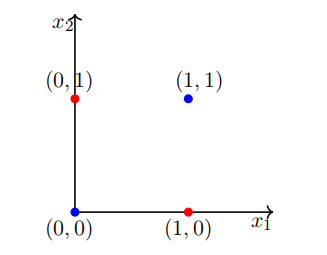
现实世界中的大多数数据都不是线性可分的，并且总是包含一些异常值. 事实上，有时可能不存在任何异常值，但数据仍然可能不是线性可分的. 我们需要能够处理这类数据的计算单元（模型）. 虽然单个感知机无法处理这类数据，但我们将展示一个感知机网络确实可以处理这类数据.
在了解感知机网络如何处理非线性可分数据之前，我们先更详细地讨论一下布尔函数……
用2个输入可以设计出多少个布尔函数呢？我们从一些你已经知道的简单函数开始.
| \(x_1\) | \(x_2\) | \(f_1\) | \(f_2\) | \(f_3\) | \(f_4\) | \(f_5\) | \(f_6\) | \(f_7\) | \(f_8\) | \(f_9\) | \(f_{11}\) | \(f_{12}\) | \(f_{13}\) | \(f_{15}\) | \(f_{16}\) |
|---|---|---|---|---|---|---|---|---|---|---|---|---|---|---|---|
| 0 | 0 | 0 | 0 | 0 | 0 | 0 | 0 | 0 | 0 | 1 | 1 | 1 | 1 | 1 | |
| 0 | 1 | 0 | 0 | 0 | 0 | 1 | 1 | 1 | 1 | 0 | 1 | 1 | 1 | 1 | |
| 1 | 0 | 0 | 0 | 1 | 1 | 0 | 0 | 1 | 1 | 0 | 1 | 1 | 1 | 1 | |
| 1 | 1 | 0 | 1 | 0 | 1 | 0 | 1 | 0 | 1 | 0 | 1 | 1 | 1 | 1 |
在这些函数中，有多少是线性可分的呢？（结果是除了异或（XOR）和同或（!XOR）之外的所有函数，你可以自行验证）. 一般来说，n个输入可以有多少个布尔函数呢？有\(2^{2^{n}}\)个. 在这\(2^{2^{n}}\)个函数中，有多少个不是线性可分的呢？目前，你只需要知道至少有一些函数可能是非线性可分的就够了.
8 感知机网络的表示能力¶
现在我们将了解如何使用感知机网络来实现任何布尔函数……
在此讨论中，我们假设True = +1，False = -1. 我们考虑2个输入和4个感知机. 每个输入都以特定权重连接到所有4个感知机. 每个感知机的偏置（\(w_0\)）为 -2（即每个感知机只有在其输入的加权和 \(\geq 2\) 时才会激活, 激活时输出为 1，否则为 0）. 这些感知机中的每一个都通过权重（需要学习）连接到一个输出感知机. 这个感知机的输出（\(y\)）就是这个网络的输出.
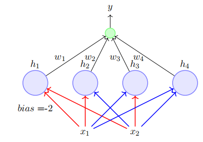
- 这个网络包含3层.
- 包含输入（\(x_1, x_2\)）的层称为输入层.
- 中间包含4个感知机的层称为隐藏层.
- 最后包含一个输出神经元的层称为输出层.
- 隐藏层中4个感知机的输出分别表示为\(h_1, h_2, h_3, h_4\).
- 红色和蓝色的边称为第一层权重.
- \(w_1, w_2, w_3, w_4\)称为第二层权重.
我们声称这个网络可以用来实现任何布尔函数（无论是否线性可分）！换句话说，我们可以找到\(w_1, w_2, w_3, w_4\)，使得任何布尔函数的真值表都可以由这个网络表示. 这听起来很惊人！但如果你理解了其中的原理，就不会这么觉得了.
中间层的每个感知机只对特定的输入激活（并且没有两个感知机对相同的输入激活）. 第一个感知机在输入为{-1, -1}时激活，第二个感知机在输入为{-1, 1}时激活，第三个感知机在输入为{1, -1}时激活，第四个感知机在输入为{1, 1}时激活.
设\(w_0\)为输出神经元的偏置（即当\(\sum_{i = 1}^{4}w_ih_i \geq w_0\)时，它会激活, 激活时输出为 1，否则为 0 ）.
| \(x_1\) | \(x_2\) | XOR | \(h_1\) | \(h_2\) | \(h_3\) | \(h_4\) | \(\sum_{i = 1}^{4}w_ih_i\)（以\(w_1\)为例） |
|---|---|---|---|---|---|---|---|
| 0 | 0 | 0 | 1 | 0 | 0 | 0 | \(w_1\) |
| 0 | 1 | 1 | 0 | 1 | 0 | 0 | \(w_2\) |
| 1 | 0 | 1 | 0 | 0 | 1 | 0 | \(w_3\) |
| 1 | 1 | 0 | 0 | 0 | 0 | 1 | \(w_4\) |
异或（XOR）函数的真值表为：\(x_1 = 0, x_2 = 0\) 时输出为0 ；\(x_1 = 0, x_2 = 1\) 时输出为1 ；\(x_1 = 1, x_2 = 0\) 时输出为1 ；\(x_1 = 1, x_2 = 1\) 时输出为0. - 对于 \(x_1 = 0, x_2 = 0\) ，要使输出神经元不激活（输出为0 ），就需要 \(\sum_{i = 1}^{4}w_ih_i = w_1 < w_0\) . - 对于 \(x_1 = 0, x_2 = 1\) ，要使输出神经元激活（输出为1 ），就需要 \(\sum_{i = 1}^{4}w_ih_i = w_2 \geq w_0\) . - 对于 \(x_1 = 1, x_2 = 0\) ，要使输出神经元激活（输出为1 ），就需要 \(\sum_{i = 1}^{4}w_ih_i = w_3 \geq w_0\) . - 对于 \(x_1 = 1, x_2 = 1\) ，要使输出神经元不激活（输出为0 ），就需要 \(\sum_{i = 1}^{4}w_ih_i = w_4 < w_0\) .
通过这样设置权重 \(w_1, w_2, w_3, w_4\) 与偏置 \(w_0\) 的关系，就可以让这个感知机网络实现异或函数的功能. 每个权重 \(w_i\) 负责一种特定输入组合下的输出情况，通过调整权重来满足异或函数不同输入对应的输出要求. 本质上，每个\(w_i\)现在负责4种可能输入中的一种，并且可以进行调整以获得该输入对应的期望输出.
很明显，同样的网络也可以用来表示其余15个布尔函数. 每个布尔函数都会产生一组不同的、不矛盾的不等式，通过适当地设置\(w_1, w_2, w_3, w_4\)就可以满足这些不等式. 试试吧！
如果我们有超过3个输入会怎样呢？同样，8个感知机中的每一个都只会对8种输入中的一种激活. 第二层的8个权重中的每一个都负责8种输入中的一种，并且可以进行调整以产生该输入对应的期望输出.
如果我们有n个输入呢？
定理: 任何n输入的布尔函数都可以由一个感知机网络精确表示，该网络包含一个具有\(2^{n}\)个感知机的隐藏层和一个包含1个感知机的输出层.
证明（非正式）：我们刚刚看到了如何构建这样的网络.
注意：具有\(2^{n} + 1\)个感知机的网络不是必要的，而是充分的. 例如，我们已经看到只用1个感知机就可以表示与（AND）函数.
问题在于：随着n的增加，隐藏层中的感知机数量显然会呈指数级增长.
同样，我们为什么要关注布尔函数呢？这对预测我们是否喜欢一部电影有什么帮助呢？让我们来看看！
我们得到了关于过去电影观影体验的数据. 对于每部电影，我们得到了用于决策的各种因素（\(x_1, x_2, \ldots, x_n\)）的值，并且还得到了 \(y\)（喜欢/不喜欢）的值. \(p_i\) 是输出为1的点，\(n_i\)是输出为0的点. 这些数据可能是线性可分的，也可能不是.
我们刚刚看到的证明告诉我们，可以构建一个感知机网络并学习其中的权重，使得对于任何给定的\(p_i\)或\(n_j\)，网络的输出都与\(y_i\)或\(y_j\)相同（即我们可以将正样本点和负样本点分开）.
我们刚才看到的这种形式的网络（包含输入层、输出层和一个或多个隐藏层）被称为多层感知机（简称为MLP）. 更准确的术语应该是“多层感知机网络”，但MLP是更常用的名称.
我们刚才看到的定理给出了具有单个隐藏层的MLP的表示能力. 具体来说，它告诉我们具有单个隐藏层的MLP可以表示任何布尔函数.